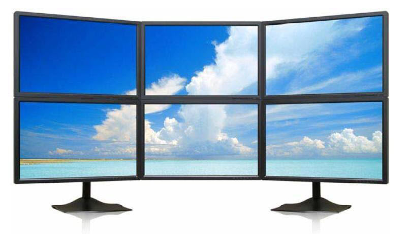
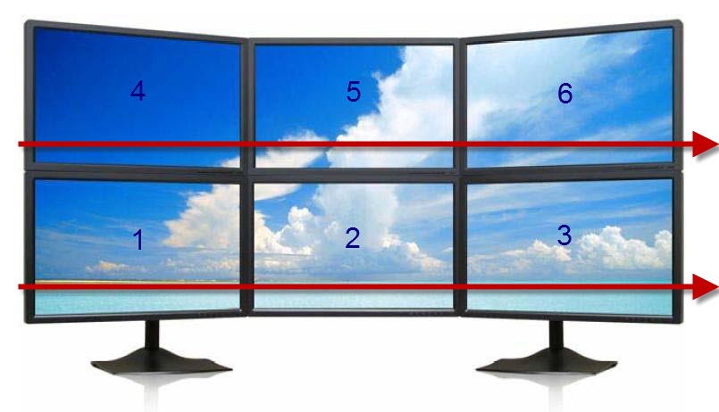

Windows Master seamlessly supports multi-monitor configurations such as the one shown below. Each action within Windows Master is monitor-sensitive. For example, Snap to Center will center the active window within the monitor the window is currently on.
It is imperative for a program like Windows Master to have a way to move windows from one monitor to another. Windows Master provides this through the Window to Left Monitor and Window to Right Monitor actions. The problem with most programs is that these actions do not always move the window to the monitor that is physically located to the left or right.
Note: Window to Left Monitor and Window to Right Monitor are located in the Other Actions tab within Windows Master.
Windows Master truly does move the windows between monitors based upon physical location. It does so by ordering monitors where #1 is the bottom-left monitor and the last monitor is at the top-right. If monitors are stacked, such as in the screenshot below, Windows Master "wraps" the window between the top and bottom monitors from in order from left to right.
For example, if the monitor is on #1 and the Window to Left Monitor action is invoked, then the window is placed on monitor #6. If the monitor is on #3 Window to Right Monitor action is invoked, then the window is placed on monitor #4. Finally, if the monitor is on #6 Window to Right Monitor action is invoked, then the window is placed on monitor #1. In this way, windows are "wrapped" between monitors.
